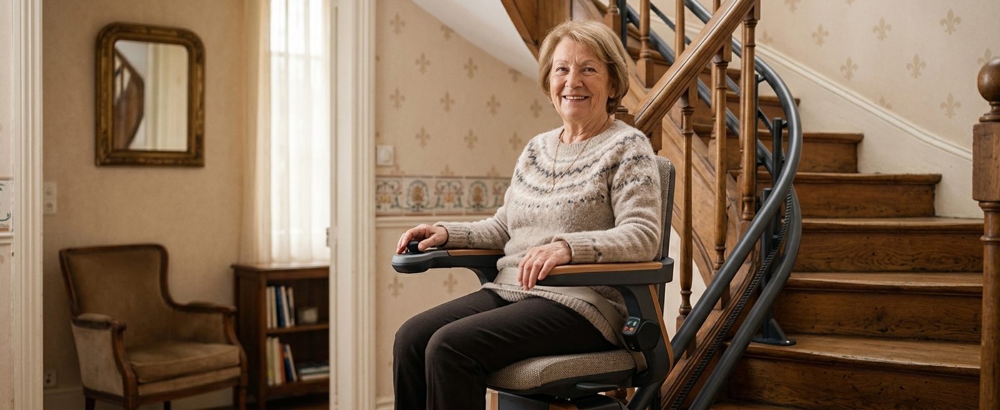

Monte-escalier droit
Pour un escalier sans virage. Rail standard plus simple à fabriquer et à poser : généralement la solution la plus rapide et la plus économique.
Comparez les modèles droits, tournants et extérieurs, comprenez les coûts et vérifiez les solutions disponibles dans votre secteur.
Un monte-escalier est un siège motorisé qui se déplace le long d’un rail fixé à l’escalier. Il permet de monter et descendre les étages sans effort, sans travaux lourds sur la structure du logement.
Le rail est conçu selon la configuration de votre escalier : droit, tournant, avec ou sans palier. Des modèles existent pour l’intérieur comme pour l’extérieur, en installation droite ou courbe sur mesure.

Pour un escalier sans virage. Rail standard plus simple à fabriquer et à poser : généralement la solution la plus rapide et la plus économique.
Pour les escaliers avec virages, quarts tournants ou paliers. Le rail est fabriqué sur mesure, ce qui allonge les délais et augmente le coût.
Pour un perron ou un accès extérieur en pente. Composants traités contre les intempéries ; une housse de protection est souvent recommandée.
Une plateforme d’appui en position semi-debout, utile lorsque plier les genoux est difficile ou que l’escalier est très étroit.
Une alternative pour les personnes en fauteuil roulant ou lorsque quelques marches seulement séparent deux niveaux.
Les équipements varient selon les modèles et les fabricants : tous ne sont pas inclus d’office. Les plus utiles à connaître :
Ce qui fait varier le prix
La forme de l’escalier, la longueur du rail, le nombre de paliers, l’usage intérieur ou extérieur, la personnalisation, le siège et les options, la préparation électrique, la pose, la garantie et le contrat d’entretien.
Chaque installation est spécifique : seul un devis établi après visite technique reflète le coût réel de votre projet. Consulter le guide détaillé des prix →
Demande initiale
Vous décrivez votre escalier et votre besoin.
Évaluation et prise de mesures
Un professionnel examine la configuration et mesure l’escalier.
Choix du modèle et devis
Modèle, options et conditions sont détaillés dans un devis personnalisé.
Fabrication si nécessaire
Les rails tournants sont fabriqués sur mesure.
Pose, démonstration et remise
Installation, essais et prise en main avec vous. Les délais dépendent du modèle et du professionnel.
Selon votre situation, plusieurs dispositifs peuvent participer au financement d’un monte-escalier, sous conditions d’éligibilité et de validation du projet :
Les montants, plafonds et conditions évoluent : vérifiez toujours les règles en vigueur auprès des organismes officiels avant de vous engager. Go Senior ne décide pas de l’éligibilité aux aides.
Matériel adapté exactement à votre escalier, garantie complète, installation par le professionnel. L’option la plus courante pour un besoin durable.
Prix réduit, mais le rail doit être compatible avec votre escalier — surtout pour les modèles tournants. Vérifiez la garantie et qui assure la pose.
Pertinente pour un besoin temporaire, par exemple une convalescence. Généralement limitée aux escaliers droits.
Go Senior vérifie si des professionnels indépendants prennent en charge les projets de monte-escalier dans votre secteur. Si c’est le cas, votre demande peut être transmise pour échanger sur votre escalier et établir un devis personnalisé.
À titre indicatif, comptez de 2 500 à 5 500 € pour un modèle droit et de 6 000 à 12 000 € pour un modèle tournant. Le coût réel dépend de votre escalier : seul un devis après visite fait référence.
Le modèle droit utilise un rail standard sur un escalier sans virage. Le modèle tournant nécessite un rail cintré sur mesure pour suivre les courbes et paliers, d’où un délai de fabrication et un prix plus élevés.
Souvent oui : sièges compacts, repose-pieds repliables et modèles debout permettent d’équiper de nombreux escaliers étroits. La faisabilité se confirme lors de la prise de mesures.
La pose elle-même prend généralement une demi-journée à une journée. Le délai global dépend du modèle : un rail tournant sur mesure demande un temps de fabrication supplémentaire.
Dans la grande majorité des cas, le rail est fixé aux marches, pas au mur. Cela évite de solliciter la structure murale et convient à la plupart des escaliers.
La plupart des modèles récents fonctionnent sur batterie rechargée en continu : quelques trajets restent possibles pendant une coupure. Vérifiez ce point sur le modèle proposé.
Oui, sous conditions : MaPrimeAdapt’, APA, PCH, caisses de retraite ou aides locales peuvent participer au financement. Les règles évoluent — vérifiez auprès des organismes officiels. Voir notre guide MaPrimeAdapt’ →
Oui, surtout pour les escaliers droits et les besoins temporaires. La location comprend généralement la pose, l’entretien et le retrait du matériel.
C’est possible, à condition que le rail soit compatible avec votre escalier — rarement le cas pour les rails tournants sur mesure. Vérifiez la garantie et la responsabilité de la pose.
Indiquez votre code postal dans le formulaire : si un professionnel indépendant intervient dans votre secteur, votre demande peut lui être transmise pour échanger sur votre projet.
Demande gratuite et sans engagement. La disponibilité dépend du projet et du secteur.